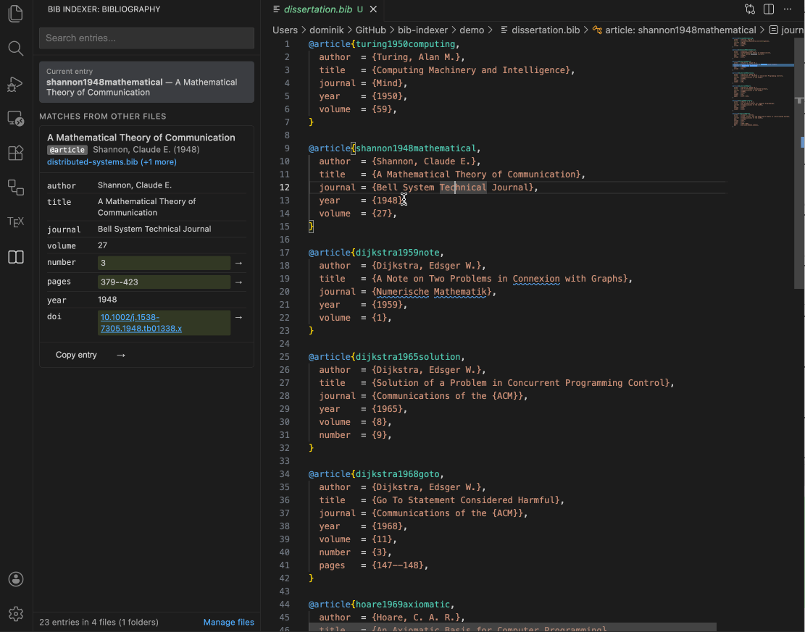
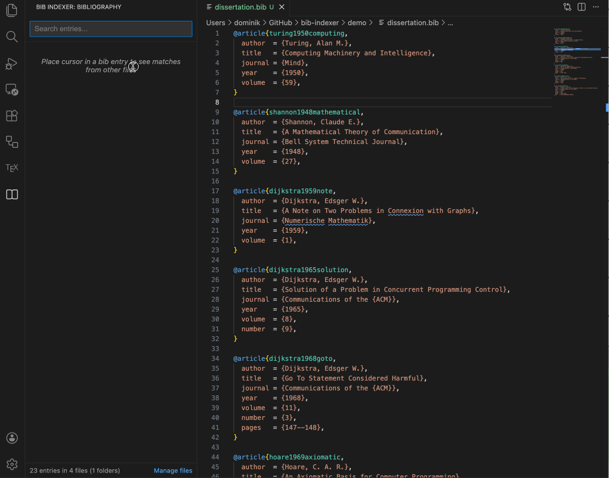
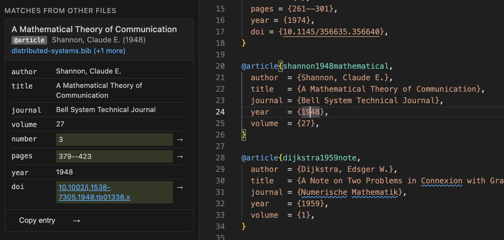
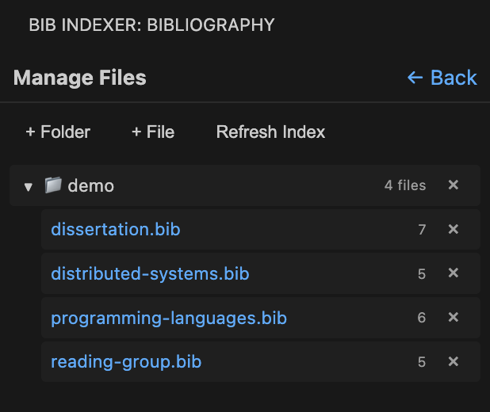

Bib Indexer
A sidebar for researchers who keep separate .bib files for different projects. Bib Indexer scans the bibliography files on your computer into one searchable index. While you edit an entry, it shows matching entries from your other files and lets you merge missing fields with one click.
Install from the VS Code Marketplace Source code on GitHub Report an issue
Example: you are editing a BibTeX entry that is missing page numbers, and another .bib file on your computer has a more complete entry for the same paper. Bib Indexer finds it, shows it in the sidebar, and a click copies the missing fields into your entry.

What it does
Search across all your bibliographies
Full-text search over every indexed file. Quoted phrases match exactly, multi-term queries are supported, and results are ranked by relevance and grouped by paper so that different versions of the same entry appear together.

Duplicate detection and field comparison
With the cursor on a BibTeX entry, the sidebar lists matching entries from other files, found by DOI or by fuzzy title and author similarity. Each match highlights new fields (green), differing values (with an inline diff) and identical fields.

Merging and inserting
When the same paper appears in several files, compatible entries (same BibTeX type, no conflicting values) are merged into one card with the union of their fields. Copy entry puts the BibTeX on the clipboard, Insert entry adds it to the current file, and Insert field adds one missing field, respecting indentation and field order.
File management
Add folders or single .bib files to the index from the sidebar. The extension watches for changes and reindexes only the files that were modified.

How to use it
- Install the extension and open a workspace that contains
.bibfiles. - Click the Bib Indexer icon in the activity bar.
- Use Manage files to add the folders or files to scan.
- Put the cursor on a BibTeX entry to see matches, or type in the search box to find entries in all files.
Commands
Available from the Command Palette: Bib Indexer: Add Folder to Index, Bib Indexer: Remove Folder from Index and Bib Indexer: Reindex All Files.
Settings
| Setting | Default | Purpose |
|---|---|---|
bibIndexer.indexedFolders | [] | Folders scanned recursively for .bib files |
bibIndexer.similarityThreshold | 0.85 | Minimum similarity (0 to 1) for fuzzy matches |
bibIndexer.ignoredFields | ["keywords", "abstract", …] | Fields skipped when parsing; wildcards such as bdsk-file-* are allowed |
Privacy, license and source
The index is built and stored locally from the files you choose; nothing is uploaded. The extension is MIT licensed, and the source code and issue tracker are on GitHub.